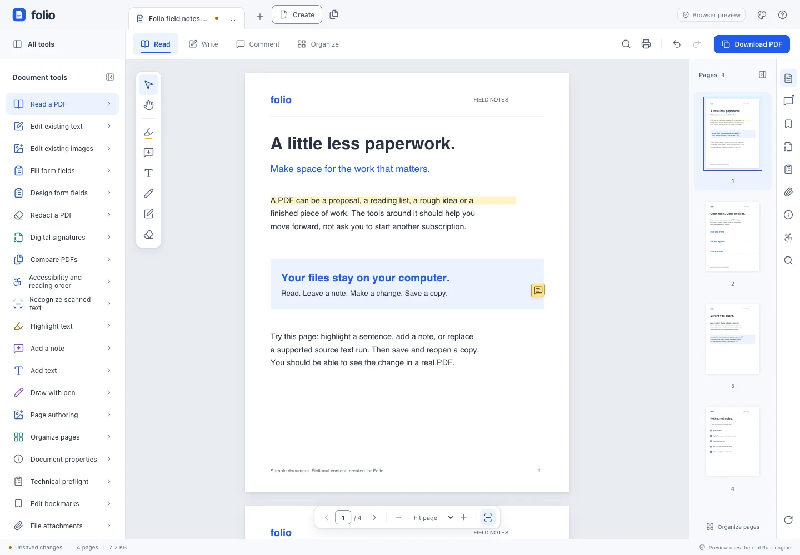

Your PDFs.
Your rules.
Meet Folio, a free, local-first desktop PDF workspace. An independent, open-source alternative to Adobe Acrobat.
Read. Annotate. Edit supported text.
No account. No subscription.
This is the current source build. The v0.1.1 installers have fewer features.

A real PDF. A real workspace. Original sample content.
Desktop workspace; detail crop on small screens.
For the work between
“open” and “send”.
Keep the familiar PDF essentials.
Lose the monthly price tag.
Some files are a quick read.
Others need a little work.
Folio puts the document first: familiar tools, portable PDF changes, and a source codebase you can actually inspect.
Apache-2.0 licensed- Read & find
- Continuous pages, search, bookmarks and independent document tabs.
- Make your mark
- Highlights, notes, placed text and pen annotations that travel with the PDF.
- Actually edit
- Replace or delete supported existing text runs, not just cover them with an annotation.
- Put pages in place
- Reorder, rotate, duplicate, combine and extract pages. Undo when an idea changes.
- Keep control
- Process files locally. Open supported password PDFs and retain their protection when saving.
The next chapter
is open, too.
Build current source
Newer features are on main, not in the v0.1.1 installers.
We keep that distinction visible. A good open-source project earns trust by showing what works — and what doesn’t.
- Measured paragraph reflow inside adjustable boxes.
- Human-reviewed tagged copies and semantic reading.
- Pinned offline OCR for 15 languages, including Arabic, Hindi, Japanese and Korean.
- Offline CRL and RFC3161 signature evidence with explicit custom trust.
These are delivered subsets, not full Acrobat parity, automatic accessibility certification or qualified-signature assurance.
Read the supported workflows and limitsA little less
paperwork starts here.
Download the v0.1.1 release for the core reader and editor. It includes protected PDFs and independent tabs. For the latest feature wave, build from source.
These installers are not production-signed. macOS is ad-hoc signed and not notarized; Windows and Linux packages are unsigned.
Prefer a Linux AppImage? x64 only; follow the runtime guidance. Intel macOS and ARM Windows/Linux installers are not provided.
Good questions.
Straight answers.
Is Folio really free?
Yes. Folio is licensed under Apache-2.0, with no subscription or account required by the app. You can use, inspect and contribute to its source. Third-party dependencies retain their own licenses.
Can it replace every Acrobat workflow?
No. Folio is an independent alternative for supported workflows, not a complete Acrobat replacement. Complex text shaping, arbitrary layout reconstruction, full Office conversion and formal PDF/UA or qualified-signature assurance are not promised. Read the exact boundaries before using it for important work.
What stays on my computer?
The desktop app processes PDF contents locally. This introduction page has no analytics, signup form or PDF upload. Fonts and screenshots are served with the page. If browser storage is available, your appearance choice is saved only in this browser; System is the default. Installer downloads, stars and contribution links take you to GitHub.
Why might my computer show an installer warning?
Current releases are unsigned or ad-hoc signed, rather than production-signed and notarized. Download only from the official release, verify SHA256SUMS, and review your operating system’s warning. Do not disable system security to install Folio. Apple’s guidance on trusted apps explains macOS approval.
Does a black rectangle permanently redact text?
No. Ordinary annotations and cropping do not erase content. Folio’s applied redaction exports a separate image-only PDF that omits original objects, but loses searchable text and document structure. Preserve the original and share only the deliberately exported copy; read the limits first.
Good tools get better
when they’re open.
Found a rough edge? Have a workflow worth improving?
Help shape an open-source PDF workspace.